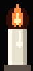
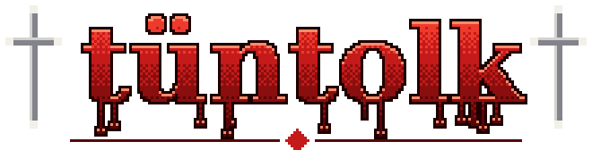
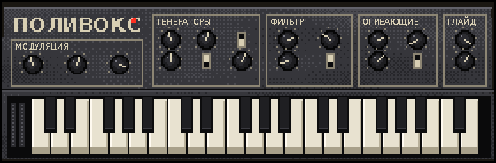
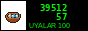

tüntolk play old Soviet synths, the famous one is the Polivoks (Formanta, 1982): two oscillators, a filter that screams. I can't afford one (nobody can, they cost like a car now). So I made a toy. Click the keys or press A S D F G H J K. Turn the filter down for Kara Suu, up for Kazan.

nothing is recorded or sent anywhere. it's just your browser making a sound.
